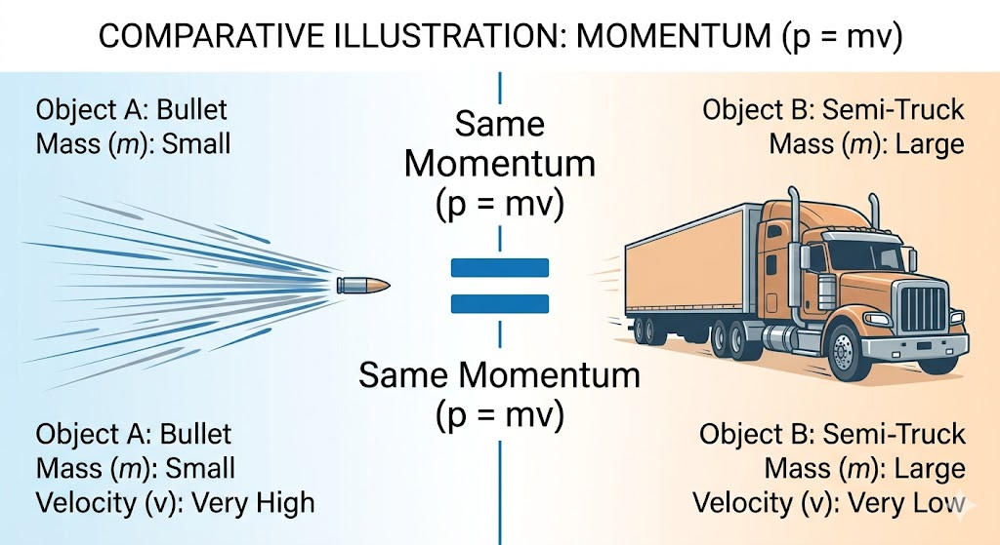

Dear Class 12 Student, welcome! Before we dive into advanced concepts like Electrostatics and Electromagnetism in Class 12, it is strictly mandatory that you master the concepts in this module. Mechanics is the language of Physics. If you don't understand how forces interact here, you will struggle to understand how electric and magnetic forces interact later. Read these notes meticulously!

In our daily experience, we push, pull, or lift things. This interaction that changes or tends to change the state of rest or uniform motion of an object is called a Force.
Inertia is the inherent property of a material body by virtue of which it cannot change its state of rest or uniform motion in a straight line on its own. There are three types of inertia:
Often known as the Law of Inertia (originally proposed by Galileo), this law provides the qualitative definition of force.
Statement: "Every body continues to be in its state of rest or of uniform motion in a straight line unless compelled by some external unbalanced force to act otherwise."
What this means for Class 12: If you see a charged particle moving with a constant velocity (constant speed and straight line), or resting perfectly still, you immediately know that the Net Force on it is ZERO ($\Sigma F = 0$).

Momentum is mathematically the product of an object's mass and its velocity. Think of it as the "Quantity of Motion" contained in a body.
While the first law tells us what happens when force is absent, the second law tells us how to calculate the force.
Statement: "The rate of change of linear momentum of a body is directly proportional to the applied external force and takes place in the direction in which the force acts."
Mathematical Derivation:
Let Force be $\vec{F}$, and momentum be $\vec{p}$. According to the law:
$$ \vec{F} \propto \frac{d\vec{p}}{dt} $$ $$ \vec{F} = k \frac{d}{dt}(m\vec{v}) $$In SI units, $k = 1$. If the mass $m$ remains constant (which is true for almost all classical mechanics problems we solve), we can pull $m$ out of the differentiation:
$$ \vec{F} = m \left(\frac{d\vec{v}}{dt}\right) $$Since $\frac{d\vec{v}}{dt}$ is acceleration ($\vec{a}$):
$$ \vec{F} = m\vec{a} $$Sometimes, a very large force acts for a very short duration of time (e.g., a bat hitting a cricket ball, or a hammer striking a nail). We call this an Impulsive Force. It is difficult to measure the force and time separately, so we measure their product, called Impulse.
Impulse ($J$ or $I$): Product of average force and the time interval.
$$ \vec{J} = \vec{F}_{avg} \times \Delta t $$Impulse-Momentum Theorem:
Since $\vec{F} = \frac{\Delta\vec{p}}{\Delta t}$, we can write $\vec{F} \Delta t = \Delta\vec{p}$. Therefore:
$$ \vec{J} = \Delta\vec{p} = \vec{p}_{final} - \vec{p}_{initial} $$Example: A cricket fielder pulls his hands backward while catching a ball. By increasing the time ($\Delta t$) of catching, he reduces the force ($\vec{F}$) exerted by the ball on his hands, since the change in momentum ($\Delta\vec{p}$) remains constant.

Statement: "To every action, there is always an equal and opposite reaction."
$$ \vec{F}_{AB} = - \vec{F}_{BA} $$(Force on body A by body B is equal and opposite to Force on body B by body A).
This is a direct consequence of the Second and Third Laws. It is heavily used in modern physics (nuclear reactions, collisions of atoms).
Statement: "In an isolated system (where net external force is zero), the total linear momentum of the system remains constant."
$$ \text{If } \vec{F}_{ext} = 0, \text{ then } \frac{d\vec{p}}{dt} = 0 \implies \vec{p}_{total} = \text{Constant} $$To master Class 12 Physics, you must accurately identify these three fundamental mechanical forces at a glance:
The gravitational force with which the Earth pulls an object. It always acts vertically downwards towards the center of the earth, regardless of the angle of the surface the object is on.
$$ W = mg $$The contact force exerted by a surface on an object. It acts perpendicular (normal) to the surfaces in contact, pushing away from the surface.

The pulling force transmitted through a string, rope, or cable. It always acts away from the tied mass and along the string.
 of a pink rectangular block resting on a grey inclined plane.jpg)
This is the most critical skill for a Class 12 student. An FBD is a diagram that isolates a single object and shows ALL the external forces acting ON that object.
Visualization: FBD of a Block on an Inclined Plane

Forces acting at the same point on a body are called concurrent forces. A body is said to be in translational equilibrium if the vector sum of all concurrent forces acting on it is exactly zero.
$$ \Sigma \vec{F} = \vec{F}_1 + \vec{F}_2 + \vec{F}_3 + ... = 0 $$For solving numericals in 2D, we resolve forces into X and Y components. Equilibrium means:
$$ \Sigma F_x = 0 \quad \text{and} \quad \Sigma F_y = 0 $$Lami's Theorem: If three concurrent forces are in equilibrium, each force is proportional to the sine of the angle between the other two forces.
$$ \frac{F_1}{\sin \alpha} = \frac{F_2}{\sin \beta} = \frac{F_3}{\sin \gamma} $$
Friction is the opposing force that comes into play when one body moves or tends to move over the surface of another body. It always opposes the relative motion between the two surfaces.
The friction that exists between a stationary object and the surface on which it's resting. It is a self-adjusting force. If you apply 2N of force and the block doesn't move, static friction is exactly 2N.
The maximum value of static friction is called Limiting Friction ($f_{max}$).
$$ f_{max} = \mu_s N $$Where $\mu_s$ is the coefficient of static friction and $N$ is the Normal reaction.
Once the applied force overcomes limiting friction, the object starts moving. The friction acting during motion is called kinetic friction. It is slightly less than limiting static friction.
$$ f_k = \mu_k N $$Where $\mu_k$ is the coefficient of kinetic friction. Note: $\mu_k < \mu_s$. Kinetic friction remains roughly constant regardless of the speed.